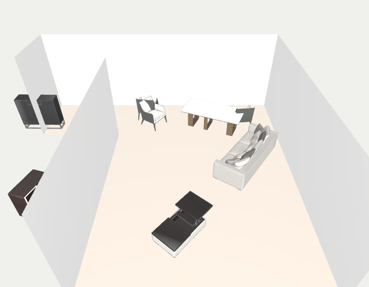
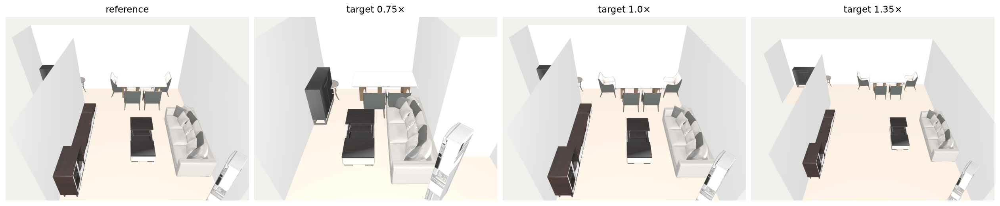
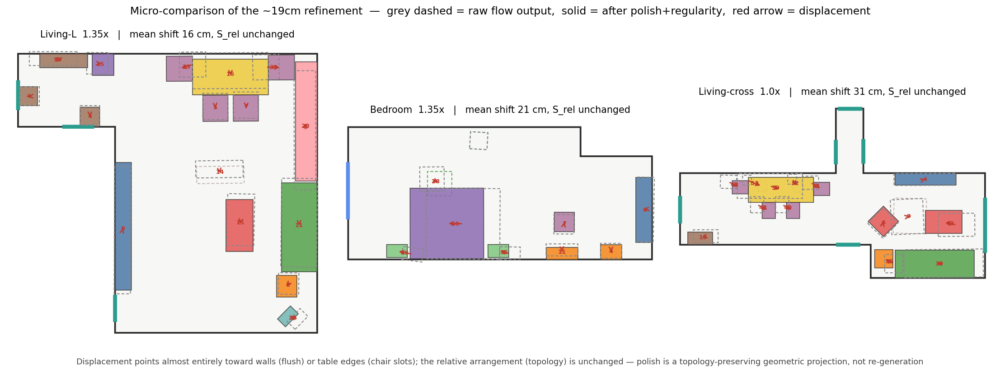

ReRoom: Reference-Guided 3D Scene Retargeting via Topology-Preserving Hierarchical Flow and a Differentiable Geometric Projection
Preprint — in preparation (not peer-reviewed)
Shipped method (walkthrough)ExperimentsCodeReferences

Abstract. Generative 3D indoor scene synthesis has advanced rapidly, yet transplanting a specific, preferred interior design into a new, geometrically mismatched room remains open. We formalize reference-guided 3D scene retargeting: given a reference scene \(S_\text{ref}\) and a target room boundary \(P_t\) of arbitrary shape, aspect ratio, and area, retarget the layout so that the reference's object composition, functional motifs, and spatial relationships are preserved while strictly satisfying boundary constraints — wall-flush, in-bounds, and collision-free. The task exposes a fundamental conflict between preserving design identity — a relational, scale-sensitive property — and satisfying hard geometry — an absolute, boundary property. Generative models cannot preserve a specific reference's topology; global affine warping distorts intra-motif metric distances under non-uniform scaling; and test-time heuristic snapping breaks layout structure and introduces secondary collisions.
We present ReRoom, built on three insights. (i) A topology-preserving hierarchical parameterization encodes each object in parent-relative metric coordinates, rendering intra-motif configurations invariant to anisotropic boundary deformation by construction. (ii) An informative-prior rectified flow, conditioned on room geometry, starts from the affine transplant of the reference and rectifies it onto the feasible-layout manifold in few steps, rather than generating from noise. (iii) A differentiable proximal projection \(\Pi_\theta\) unrolls boundary feasibility into a single gradient-friendly step, replacing fragile multi-step test-time optimization. When the target area shrinks below capacity, a relational-mass selection prunes objects while preserving the densest core of the design's relation graph. Across challenging non-convex boundaries, ReRoom preserves design identity while meeting hard geometric constraints at the cost of one network forward pass plus one projection.
1. Introduction
A person who likes one room's layout rarely wants a different design for the next room — they want that design, adapted to fit. We call this reference-guided 3D scene retargeting: transplant a reference layout \(S_\text{ref}\) into a target room boundary \(P_t\) of arbitrary shape, area, and aspect ratio, so the reference's composition, functional groupings, and spatial relationships carry over while the result is physically valid in the new room. It underpins personalized virtual staging, adaptive game-level generation, and metaverse space reconstruction, and it is distinct from scene synthesis: the target is a particular existing design, not a plausible new one.
The retargeting dilemma. The task sets two objectives against each other. Design-identity preservation asks to conserve the reference's relative structure (intra-motif spacing, orientation alignment, wall affinity), which is scale-sensitive and lives in object relationships, not coordinates (our Design Identity Hypothesis). Hard geometric adaptation asks the layout to fit \(P_t\) exactly — wall-flush, in-bounds, collision-free — an absolute, boundary property. Warping the layout to fit the boundary distorts the relations; sampling a layout that fits the boundary abandons the reference. Reconciling the two is the core problem.
Three established paradigms each resolve the dilemma in one direction only. Generative layout models — autoregressive [1] and diffusion [2][3] — sample a plausible layout from a prior, but have no handle to bind a specific reference's composition to the new boundary. Global affine warping preserves the relation graph exactly, but under non-uniform scaling it stretches intra-motif metric distances — a dining set drifts apart — because it treats a functional group's absolute spacing as elastic. Post-hoc optimization and snapping — LEGO-Net's [4] test-time denoising, PhyScene's [5] feasibility guidance, heuristic wall-snap — repair geometry after the fact, but test-time optimization is slow and stalls in local minima, and hard snapping breaks the generated structure, dropping relational retention while rebounding collisions. None simultaneously honors the reference and the boundary.
These failures are not incidental; each identifies a requirement that jointly determines the architecture. (1) Because identity is relative structure, retargeting is transport that must preserve topology, not free generation — so we start the flow from an affine reference prior rather than Gaussian noise, which would permute object identities and reorder motifs before any structure is imposed. (2) Because non-uniform room stretch is what distorts intra-motif metric distances, the transport must be scale-invariant — so we place the flow in a hierarchical, parent-relative metric code that decouples child scale from room geometry, rendering intra-motif topology invariant to anisotropic scaling by construction. (3) Because the remaining wall-flush / non-collision constraints are hard and lie off the learned manifold, and multi-step test-time optimization is slow and local-minimum-prone, we discharge them with a single unrolled proximal projection \(\Pi_\theta\) — a deterministic map that repairs feasibility without re-synthesizing the layout. The three components thus follow from the three failure modes above.
Contributions.
- Metric-invariant hierarchical reparameterization (Prop. 1): parent-relative metric coordinates decouple child scale from room geometry, so motifs do not disperse under anisotropic deformation.
- Manifold-pullback guidance (Prop. 2): a cross-frame Jacobian propagating absolute-space physical constraints to hierarchical children.
- Unrolled proximal projection \(\Pi_\theta\) (Prop. 3): a lightweight operator replacing costly multi-step optimization that deterministically enforces the hard boundary constraints (wall-flush, collision-free) on complex non-convex layouts, without perturbing the learned relational topology.
- Retained-relational-mass selection: for capacity-forced pruning, keep the objects carrying the most of the reference's design-graph relations (§3.6), which beats the flow's learned mask on \(S_\text{rel}\) under shrink.
- Causal inverse-deformation data: a synthesis pipeline with four physical gates guaranteeing causally valid transfer pairs, plus a real cross-pairing out-of-distribution test.
2. Related Work
2.1. Indoor scene synthesis & layout generation
Early methods use graphical rules and energy optimization (e.g. PlanIT [19]). Modern deep generators include autoregressive transformers (ATISS [1], SceneFormer [3]) and scene-diffusion models (DiffuScene [2]). Layout editing and physical plausibility are addressed by LEGO-Net [4] and PhyScene [5]. Closest to our design-graph conditioning is InstructScene [18], which generates from a semantic graph prior; but like the others it synthesizes a scene consistent with a graph rather than transplanting one particular reference layout into a new boundary. These sample from a prior or rearrange in place; none binds a specific reference's composition and intent to a new boundary, which is our task. Procedural generators (ProcTHOR [14]) populate rooms from rules for embodied AI, again without a reference to preserve.
2.2. Continuous flows & diffusion transformers
Flow Matching [6] and Rectified Flow [7] train continuous normalizing flows by regressing a velocity field along straight interpolant paths, giving fast, simulation-free sampling — and, unlike denoising diffusion [15], a near-straight probability-flow ODE we can guide and project in few steps. Diffusion Transformers (DiT) [8] replace the U-Net backbone with a transformer modulated by adaptive layer norm; we adopt a permutation-equivariant DiT over object tokens.
2.3. Constrained generation & differentiable optimization
Differentiable optimization layers embed constrained/convex solves inside networks (OptNet [9], cvxpylayers [20]). We realize our geometric projection by explicit \(K\)-step unrolling — the same spirit, dependency-free — so gradients flow through it into the flow backbone.
3. Method
Two stages: discrete semantic topology adaptation, then continuous constrained synthesis (Fig. 2). The paper's core is Stage 2.
3.1. Problem formulation
A reference scene is \(S_\text{ref}=\{(c_i,s_i,x_i^\text{ref},\theta_i^\text{ref})\}_{i=1}^N\) (category, 3D size, center, yaw). The target boundary \(P_t\in\mathbb{R}^{32\times6}\) samples 32 boundary points with inward normals. An intent graph \(\mathcal{G}=(\mathcal{V},\mathcal{E},\alpha)\) — built automatically from object bounding boxes and categories by geometric-proximity and co-occurrence rules, with no manual annotation — has objects as nodes and typed edges with elasticity \(\alpha_{ij}\in[0,1]\); motifs induce a parent map \(\pi:\text{child}\mapsto\text{head}\). Each object carries a normalized pose \(x_i=(u_i,v_i,\cos\theta_i,\sin\theta_i)\) in the room's minimum-rotated-rectangle (MRR) frame and a metric position \(x_i^{\mathrm m}\) in world meters. The hierarchical map \(\Phi_\mathcal{G}:x\mapsto z\) keeps each head in the normalized frame — so it absorbs the room's scaling — but encodes each child by its parent-local offset in the metric frame, normalized by a fixed constant \(\lambda=3\,\)m:
$$z_h=x_h=(u_h,v_h,\cos\theta_h,\sin\theta_h)\in\mathbb R^4,\qquad z_c=\Big(\tfrac{1}{\lambda}R(-\theta_{\pi(c)})\big(x_c^{\mathrm m}-x_{\pi(c)}^{\mathrm m}\big),\ \cos\Delta\theta_c,\ \sin\Delta\theta_c\Big)\in\mathbb R^4,\quad \Delta\theta_c=\theta_c-\theta_{\pi(c)}.$$Because the child term divides a physical offset (meters) by the constant \(\lambda\) rather than by the room, \(z_c\) contains no room-scale variable — the algebraic reason Prop. 1 holds by construction: an anisotropic room scaling changes each head's normalized coordinate but leaves every child's metric offset, hence \(z_c\), unchanged.
We train a rectified flow [7][6] with an informative prior: the Gaussian start is replaced by the reference layout affinely projected into \(P_t\) plus light noise, so the network rectifies rather than generating from scratch:
$$x_0=\mathcal{T}(S_\text{ref},P_t)+\sigma\epsilon,\qquad \mathcal{L}_\text{FM}=\mathbb{E}_\tau\big\|v_\theta(x_\tau,\tau,\mathcal{G},P_t)-(x_1-x_0)\big\|^2 .$$Overview. We present the continuous geometric flow — the generative core of ReRoom — first (Stage 2, §3.2–§3.5: hierarchical parameterization, DiT backbone, guidance, projection), then the upstream discrete capacity-pruning mechanism that precedes it at inference (Stage 1, §3.6), matching the pipeline of Fig. 2.
Notation. Symbols reused across sections, disambiguated to avoid overloading:
| Symbol | Definition (domain) |
|---|---|
| \(\alpha_{ij}\) | edge elasticity — how far a relation may stretch (\([0,1]\)) |
| \(w_{ij}\) | design-graph relation weight — a relation's importance in \(S_\text{rel}\) and in Stage-1 selection (\(\ge 0\)); distinct from \(\alpha_{ij}\) |
| \(e_{ij},\ D\) | pairwise relation feature and its normalized distance (\(D\in[0,1]\)) |
| \(\rho\) | target/reference floor-area ratio |
| \(\kappa\) | number of objects kept under the area budget (Stage 1, §3.6) |
| \(K\) | unrolled step count of the projection \(\Pi_\theta\) (\(K{=}40\), §3.5) |
Automatic intent-graph construction. \(\mathcal G\) is built from the object bounding boxes \(\{b_i=(x_i,\mathrm{size}_i,c_i)\}\) with no manual annotation. Only pairs within a room-scaled radius \(\tau_d=\operatorname{clip}(1.05\,\mathrm{diag}(P_r),\,6,\,16)\) m are considered. An edge \(e_{ij}\) is instantiated by geometric predicates on the boxes: a support edge (weight 3.0) when one footprint lies vertically within another; a near edge (0.5) when the footprint gap falls below a size-adaptive threshold \(\tau_n=\max(0.55,\,0.65\max(\bar s_i,\bar s_j))\) m (\(\bar s\) the mean plan side); an aligned edge (1.0) at lateral offset \(\le 2.2\,\tau_n\); and grouped/symmetric edges (1.2–2.0) among objects within 3.2 m of a semantic anchor (anchor score \(\ge 0.45\)). Per-kind weights \(w_{ij}\) (support 3.0, against-wall 1.8, facing 1.6, aligned 1.0, near 0.5, …) set relation importance; motifs are the maximal anchor-centred groups. The elasticity \(\alpha_{ij}\in[0,1]\) is a category/kind prior or a learned \(f_\psi(c_i,c_j,\rho_{ij},\text{motif})\); it interpolates the retargeted relation distance \(\tilde d_{ij}=(1-\alpha_{ij})\,d^r_{ij}+\alpha_{ij}\,\gamma_{ij}\,d^r_{ij}\) with room-scale ratio \(\gamma_{ij}=\operatorname{clip}(\mathrm{scale}_t/\mathrm{scale}_r,\,0.25,\,4)\), so \(\alpha{=}0\) reproduces the reference distance (chair–table: human-scale, rigid) and \(\alpha{=}1\) scales it with the room (sofa–TV: elastic). Because the graph is only a set of geometric predicates over boxes, it is produced for any input at no annotation cost, and §5.5 shows the pipeline tolerates 30% corruption of it.
3.2. Metric invariance of intra-motif topology
Proposition 1. Under an anisotropic room scaling \(A=\mathrm{diag}(s_x,s_y)\), the child metric offset is absorbed by its parent's absolute coordinate, and the relative code is scale-free:
$$z_c(A\!\cdot\!P_t)=z_c(P_t)\;\Rightarrow\;\lVert x_c^{\mathrm m}-x_{\pi(c)}^{\mathrm m}\rVert\ \text{(metric, in meters) is preserved up to parent pose.}$$Scope. This is an identity that holds by construction: \(z_c\) contains no room-scale variable, so a diagonal scaling of \(P_t\) leaves it fixed. Invariance thus holds by construction — it is exact for diagonal affine maps that leave the parent pose fixed, and extends to the non-affine boundaries we deploy on (slanted wall, corner-cut; Fig. 6), where the property holds approximately and is verified empirically (§5.2.1). Consequently motifs do not disperse when the room stretches (Fig. 3); a global-coordinate flow instead predicts a normalized child offset whose metric magnitude scales with the room, dispersing the motif. Evidence: a 0.6 m offset yields \(z=0.2\) in both a 3 m and 4.5 m room; motif retention at 1.35× rises 25%→42%; raw \(S_\text{rel}=0.98\) at 1.0×.
3.3. Geometry-conditioned DiT backbone
The velocity \(v_\theta\) is a permutation-equivariant Diffusion Transformer built on multi-head self-attention [16] [8] over object tokens (Fig. 4). All scene structure enters as bias, never order. A token concatenates the flowed state, fixed conditioning (log-size, importance \(\zeta_i\), wall affinity \(a_i\), reference pose), and category/motif embeddings. Heterogeneous Type-ID tags separate global anchors from relative children; a dense pairwise geometric bias injects relative displacement/angle; a graph message-passing stream over \(\mathcal{G}\) supplies a state-independent relational prior; and WallCrossAttention treats the 32 boundary samples of \(P_t\) as wall tokens (children mask outer-wall attention so the boundary never yanks a chair off its table). Flow time \(\tau\), a boundary encoder \(g(P_t)\), room type, and a style code modulate every block via adaptive layer norm.
3.4. Manifold-pullback feasibility guidance
Proposition 2. Sampling is an energy-guided ODE. The feasibility energy \(\Phi=w_b E_\text{bound}+w_c E_\text{col}+w_{cl}E_\text{clear}+w_{wp}E_\text{wall}\) is defined in absolute space, but the flow lives on the reparameterized manifold, so guidance is pulled back:
$$z\leftarrow z+d\tau\,v_\theta-d\tau\,\mathrm{ramp}(\tau)\,\nabla_z\Phi\big(\Psi_\mathcal{G}(\hat z_1)\big),\qquad \nabla_z\Phi=J_{\Psi_\mathcal{G}}^{\top}\,\nabla_x\Phi .$$The Jacobian carries a parent-motion term for children — the explicit "move the parent, carry the children" chain rule — implemented as decode → nudge → encode, with \(\mathrm{ramp}(\tau)=\max(0,(\tau-0.5)/0.5)\).
3.5. Differentiable proximal projection \(\Pi_\theta\)
Proposition 3. The geometric regularities (wall-flush, inward facing, Manhattan orthogonality, non-collision) become a smooth proximal objective anchored to the flow's decoded output \(\hat x_1\) (the endpoint of the Stage-2 ODE, §3.1); the projection is a \(K\)-step unrolled gradient operator with iterates \(x^{(0)}{=}\hat x_1 \to \cdots \to x^{(K)}{=}x^\star\):
$$\Pi_\theta(\hat x_1)=\underset{x}{\arg\min}\;\underbrace{w_a\lVert x-\hat x_1\rVert^2}_{\text{anchor to proposal}}+w_f E_\text{flush}+w_o E_\text{ortho}+w_c E_\text{col}.$$Because every step is a differentiable tensor op, \(\Pi_\theta\) is an operator through which gradients can propagate — it can, in principle, be unrolled inside the training loss so the DiT anticipates the projection (OptNet [9] / cvxpylayers [20] spirit, realized by explicit unrolling rather than implicit differentiation). Although \(\Pi_\theta\) is unrolled differentiably — so it could, in principle, be trained end-to-end — we intentionally deploy it as a test-time proximal operator. This realizes our core principle (§7): hard boundary constraints should act as a manifold projection applied after sampling, not as a training-time term that perturbs the smooth interior flow. Empirically the two are consistent — folding \(\Pi_\theta\) into training yields no deployed gain (§7) — so the numbers below isolate \(\Pi_\theta\)'s value as an inference-time operator, which concentrates in the non-convex regime where the base flow is not already feasible (§5.1.1). Even so, the anchor term bounds the displacement to the microscopic regime (mean 19 cm measured), so topology is preserved: \(\lvert S_\text{rel}(\Pi(x))-S_\text{rel}(x)\rvert\le 0.005\) (measured). Without it, pure energy descent drifts and distorts motifs (\(S_\text{rel}\!\to\!0.566\)).
3.6. Stage 1: Budgeted Subgraph Selection via Relational Mass
Retargeting decomposes into two problems of different type. The continuous metric geometry — where surviving objects sit — is Stage 2 (the flow, §3.3–3.5). But when the target boundary shrinks, spatial capacity forces a prior, discrete decision on the intent graph: which nodes survive. These are not interchangeable — a metric optimizer cannot recover a relation whose endpoint has been deleted — so Stage 1 solves the discrete subgraph-topology problem before the flow solves the continuous one.
Area budget \(\text{Area}_\text{budget}=\operatorname{clip}(\rho+\text{slack})\cdot\operatorname{Area}(P_t)\). Objects whose short side exceeds the room's inscribed-circle diameter are removed; semantic anchors (sofa, bed) are protected and instead trigger same-style small-asset substitution. When the room cannot hold the reference furniture (\(\rho<1\)), the discrete choice of which objects survive is itself identity-critical: dropping a relationally central object severs many reference relations at once, and this pruning — not lost geometry — is the dominant source of \(S_\text{rel}\) loss under shrink (§5.2). We therefore make Stage 1 a retained-relational-mass selection: keep the size-\(\kappa\) subset \(S\) (with \(\kappa\) set by the area budget, anchors protected) that maximizes the retained design-graph relational mass \(\sum_{i,j\in S} w_{ij}\) over reference relation weights \(w_{ij}\) — a densest-relational-subgraph objective — solved by greedy removal of the least relationally-central object. This replaces importance-ordered reduction, which is blind to how much relational structure each object carries. Notably, a geometric partial Gromov–Wasserstein variant that couples reference and target object positions (an entropic, unbalanced OT coupling [12], [13]) underperforms this simple relational rule (Table 7). Geometric transport spreads the surviving furniture to cover the target floor evenly, which inadvertently severs cohesive functional units — keeping a dining table while dropping its chairs — whereas relational-mass selection retains the densest subgraphs of the intent network. Design identity is therefore graph-topological, not Euclidean-geometric.
4. Causal Data & Physical Gates
With no paired retargeting data, we run the problem backwards: take a real 3D-FRONT [10] scene as ground truth \(S_\text{tgt}\), deform its boundary through a parametric family, and inverse-map the layout (each motif moved as a rigid body) to synthesize the reference \(S_\text{ref}\). Rigidity makes the pair a physically causal design transition.

Four physical gates: (i) area-ratio resampling \(\rho\in[0.5,2.0]\); (ii) out-of-bounds rejection; (iii) rigid shared-translation pushing footprints poking through walls inward (overhang 25.1%→1.1%); (iv) a three-way collision audit separating true collisions, nestable pairs (chair-under-table, bed-with-nightstand) and z-separated objects (lamp/rug), so synthetic collision never exceeds the real source. A real cross-pairing set (human designs matched across rooms by category Jaccard \(>0.6\) and anchor-yaw \(\le 30^\circ\), aligned by a Hungarian assignment [17]) serves as an out-of-distribution test.
5. Experiments
We use 3D-FRONT [10] bedrooms and living rooms with 3D-FUTURE [11] assets, and a frozen held-out test set (12 cross-scene pairs + 4 multi-scale). Metrics. Relational retention \(S_\text{rel}=1-\frac{1}{\sum w}\sum_{(i,j)\in\mathcal E} w_{ij}\,D(e^r_{ij},e^t_{ij})\) over all reference relations \(\mathcal E\), where \(e_{ij}\) is the pairwise relation feature (offset, orientation, contact), \(w_{ij}\) its design-graph weight, \(D\!\in\![0,1]\) a normalized relation distance, and a dropped endpoint scores the maximum \(D{=}1\) (so \(S_\text{rel}\) charges pruning); \(S_\text{rel}^\text{kept}\) restricts \(\mathcal E\) to surviving pairs, isolating placement quality. Motif preservation \(S_\text{motif}\) is the weighted fraction of reference motifs whose head and a sufficient member fraction survive with intra-motif relations within tolerance — a group-level metric independent of the pairwise \(S_\text{rel}\). Feasibility: \(R_\text{col}\) (fraction of non-nestable object pairs whose footprints overlap), \(R_\text{OOB}\) (out-of-bounds), wall-snap %; plus inference latency.
5.1. Projection ablation
Same raw flow outputs, four ways to enforce geometry. Latency is the projection's added cost over the shared sampling (single L40, measured).
| Variant | \(S_\text{rel}\) ↑ | \(R_\text{col}\) ↓ | Wall-snap ↑ | Proj. latency ↓ |
|---|---|---|---|---|
| Raw DiT (no projection) | 0.707±.32 | 1.15±2.3% | 80±24% | — |
| + Test-time 25-step polish | 0.680±.31 | 1.23±2.3% | 86±23% | +289 ms |
| + Hard heuristic snap | 0.676±.31 | 1.59±2.6% | 87±20% | +0.8 ms |
| + Differentiable \(\Pi_\theta\) (Ours) | 0.703±.32 | 1.04±1.9% | 80±23% | +170 ms |
Table 1. Benign (convex) boundary regime. 36 layouts (12 references × 3 sizes), mean ± per-cell std. When the boundary is simple the base flow is already near-feasible (\(R_\text{col}\!\approx\!1.1\%\)), so \(\Pi_\theta\) acts as a safe, topology-neutral pass (\(\Delta S_\text{rel}\!\le\!0.004\)); its decisive repair capability emerges in the non-convex stress regime (Table 2). Here every method is already near-feasible, so collision does not discriminate (all rows within \(R_\text{col}\) 1.04–1.59%, one std apart). The discriminating axis is relational retention: the topology-preserving variants (raw, \(\Pi_\theta\)) hold \(S_\text{rel}\!\approx\!0.70\), whereas hard snap and polish trade \(\sim\!0.03\) \(S_\text{rel}\) for +6–7 pts wall-snap. \(\Pi_\theta\) therefore delivers topology-preserving alignment at low latency (+170 ms vs +263 ms for light polish; Table 11) — a small \(S_\text{rel}\) edge over hard snap (\(\Delta S_\text{rel}=+0.027\)) that is not significant in this easy regime (reference-clustered \(n{=}12\), \(p=0.27\)); against the raw flow \(\Pi_\theta\) is topology-neutral here (\(\Delta S_\text{rel}=-0.004\)). Its edge over the snap becomes significant precisely where feasibility is at stake — the non-convex regime (Table 2, clustered \(p=0.0024\)). Base ODE sampling is ~565 ms/layout (\(k{=}1\), 50 steps) / ~667 ms with guidance, shared by every row. The feasibility tie here is by design: \(\Pi_\theta\)'s decisive benefit emerges where the base flow fails, on non-convex boundaries (§5.1.1, Table 2).
5.1.1. Where \(\Pi_\theta\) earns its place: the non-convex failure regime
Table 1's near-tie between raw and \(\Pi_\theta\) is expected, not a weakness: at the mild test sizes the base flow already emits collision-free layouts (\(R_\text{col}=1.15\%\)), so the projection has almost nothing to correct. To locate where it matters we stress-test the base flow across the full deformation family (Fig. 6) from mild to extreme. The flow is robust on affine and slanted boundaries, but on strongly non-convex ones its feasibility breaks down: object collision roughly doubles — \(1.8\%\) (mild aspect) \(\to 4.4\%\) (corner-cut \(\times2\)) \(\to 5.1\%\) (deep L-shape) — and \(S_\text{rel}\) falls from \(0.90\) to \(0.62\), while out-of-bounds stays low (\(\le3\%\), the guidance handles containment). Concave notches, under-represented in training, are the base model's genuine failure mode.
| Finish — hard non-convex regimes | \(R_\text{col}\) ↓ | \(S_\text{rel}\) ↑ |
|---|---|---|
| none (base flow raw) | 3.84±4.0% | 0.647±.31 |
| + hard snap | 3.59±4.5% | 0.611±.30 |
| + differentiable \(\Pi_\theta\) | 2.83±2.8% | 0.648±.31 |
Table 2. Projection ablation restricted to the base model's failure regime (deep corner-cut, corner-cut\(\times2\), extreme aspect \(2.2\!\times\!0.45\); 36 layouts = 12 references \(\times\) 3 regimes). Here — unlike the easy regime of Table 1 — \(\Pi_\theta\) delivers a statistically significant feasibility gain: reference-clustered Wilcoxon (\(n{=}12\)) \(\Pi_\theta\) vs raw \(\Delta R_\text{col}=-1.01\%\) (\(p=0.0024\)) at no relational cost (\(\Delta S_\text{rel}=+0.001\), n.s.); and against the hard snap it preserves relations far better — \(\Delta S_\text{rel}=+0.037\) (clustered \(p=0.0024\)) — at comparable collision. \(\Pi_\theta\)'s value is thus regime-dependent and principled: a near-no-op where the flow is already feasible (Table 1), a significant topology-preserving repair where it is not (Table 2). It does not fully close the gap (residual \(2.83\%\) vs \(1.4\%\) in the easy regime) — a concave-boundary-aware projection is the natural next step (§7).
5.2. Baseline comparison
ATISS [1] and LEGO-Net [4] solve different tasks (unconditional completion; same-room denoising), so our primary baseline is the one our method replaces: the affine / global warp (MRR-affine map of the reference into \(P_t\), no flow), on the same seeds/sizes. We additionally evaluate LEGO-Net directly as a cross-lineage comparator through its native data loader (§5.2.2, Table 5).
| Method | \(S_\text{rel}\) ↑ | \(S_\text{rel}^\text{kept}\) ↑ | \(R_\text{col}\) ↓ | Wall-snap ↑ | Adapts count |
|---|---|---|---|---|---|
| Affine / global warp | 0.934±.05 | 0.934±.05 | 4.88±6.8% | 61±33% | ✗ |
| Ours (flow + \(\Pi_\theta\)) | 0.703±.32 | 0.916±.05 | 1.05±1.9% | 80±23% | ✓ |
Table 3. Baseline comparison (36 layouts, mean ± std). Read \(S_\text{rel}\) and \(S_\text{rel}^\text{kept}\) together: raw \(S_\text{rel}\) strictly penalizes shrinking rooms (\(0.75\times\)) because a deleted object forfeits all its reference edges (scoring 0), so ours (0.703) trails the affine map (0.934) mostly by pruning. Evaluated on the surviving objects, ReRoom comes within 0.018 of the unconstrained linear warp (\(S_\text{rel}^\text{kept}=0.916\) vs 0.934) — a small but statistically significant shortfall (reference-clustered Wilcoxon, \(n{=}12\), \(p=0.034\)); we do not claim to beat the affine warp on pure relational fidelity, which a linear map trivially maximizes. Our contribution is near-lossless fidelity at physical feasibility the affine map lacks: at that 0.018 fidelity cost ReRoom cuts collisions \(4.6\times\) (1.05% vs 4.88%, clustered \(p{<}0.001\); and far more consistently, ±1.9 vs ±6.8), adds +19 pts wall-snap, and adaptively pruning object count — which the affine map cannot. The affine map maximizes raw relation retention only because it is linear; it is physically infeasible (4.9% collisions, high variance; 61% wall-snap). Ours' \(R_\text{col}=1.05\%\) here is consistent with the \(\Pi_\theta\) row of Table 1 (1.04%), both on the same 12 references.
5.2.1. Learned baseline: does the hierarchical reparameterization matter?
An affine warp is not a learned comparator. We therefore isolate the paper's central inductive bias against a learned generative flow identical to ours except that it lacks the parent-relative reparameterization — a global-coordinate rectified-flow DiT with the same backbone, geometric bias, wall tokens, and informative prior. To remove any training-regime confound we train this global-coordinate model as a matched-protocol twin (checkpoint flow_twin): from scratch, 180 epochs, the identical data, gates, losses, and schedule as our model, differing in the single bit parent_relative=False. Crucially, Prop. 1 concerns invariance under anisotropic scaling, so we evaluate in two regimes: uniform scaling (the easy case) and anisotropic aspect-stretch (\(s_x\!\neq\!s_y\); \(1.5\!\times\!0.75\), \(1.7\!\times\!0.85\) and their transposes), the regime the reparameterization is designed for. We report the correct reference-clustered statistic (aggregate the correlated sizes within each reference first, then test the \(n{=}12\) independent references), not a per-cell test that treats pseudo-replicates as independent.
| Model — anisotropic stretch | \(S_\text{rel}\) ↑ | \(S_\text{motif}\) ↑ | \(R_\text{col}\) ↓ | Wall-snap ↑ |
|---|---|---|---|---|
| Global-coord twin (raw, matched) | 0.869±.05 | 0.983±.05 | 2.98±3.1% | 79±26% |
| Hierarchical flow (raw, ours) | 0.883±.05 | 0.990±.04 | 3.60±4.2% | 72±29% |
| + hard snap | 0.828±.09 | 0.981±.06 | 4.35±4.3% | 84±21% |
| + differentiable \(\Pi_\theta\) | 0.881±.05 | 0.986±.05 | 3.04±3.5% | 77±25% |
Table 4. Matched-protocol learned-baseline ablation under anisotropic aspect-stretch (48 layouts = 12 references × 4 stretches, mean ± std). Reference-clustered paired Wilcoxon (\(n{=}12\) references, the confound- and pseudo-replication-free test): the hierarchical reparameterization gives a statistically significant relational-retention gain over the from-scratch global-coordinate twin — \(\Delta S_\text{rel}=+0.014\), win 10/12, \(p=0.027\) (sign-test \(p=0.039\)); and the differentiable \(\Pi_\theta\) preserves relations significantly better than the hard snap — \(\Delta S_\text{rel}=+0.052\), win 10/12, \(p=0.0049\) — while also cutting collisions (3.04% vs 4.35%). \(S_\text{motif}\) is statistically tied. Isotropic consistency (a verification of Prop. 1): under uniform scaling the same clustered test gives \(\Delta S_\text{rel}=+0.005\), \(p=0.13\) — statistically indistinguishable — exactly as the theory predicts, since an isotropic map preserves relative offsets identically in both parameterizations and the hierarchical code degenerates to an equivalent form. The gain therefore arises precisely and only from resolving anisotropic stretching, the pathology Prop. 1 targets; the effect appearing exactly there confirms the mechanism rather than a coincidental correlation. (An earlier run reported a per-cell \(p=0.016\) against a warm-start checkpoint; that combined a training-regime confound with pseudo-replication and is superseded by this matched-twin, reference-clustered result.) The hierarchical model's slightly higher raw collision (3.60% vs 2.98%) is a direct consequence of the design, not a defect: the metric code locks each child within its functional radius of its parent, so under severe anisotropic contraction a cohesive cluster (e.g. a dining set) is pushed as a rigid block against an incoming wall, momentarily raising collision — whereas the global-coordinate flow lowers collision by dissolving the motif (its lower \(S_\text{rel}\)). This is exactly the decoupling the architecture intends: the flow protects relational topology, and the lightweight \(\Pi_\theta\) then resolves the boundary contact (3.04%) without breaking the cluster — the projection earning its place. Scope: our own model ablated, isolating the inductive bias; for a different-lineage competitor see §5.2.2.
5.2.2. Cross-lineage learned baseline: LEGO-Net
We run LEGO-Net [4] — a real pretrained (50k-iter, livingroom) learned model of a different lineage — repurposed as a retargeter: its denoiser is applied to the affine-transplanted layout in the scaled target room, entirely through LEGO-Net's own data loader (so its floorplan encoding, class vocabulary, and normalization are native). Because it operates in its own object representation, we report its native relational retention \(\mathcal{R}\) (scale-normalized pairwise-offset preservation vs the reference clean layout, in \([0,1]\); an affine map scores 1.0) and collision, over 48 layouts (16 livingrooms × 3 sizes).
| Method | Rel. retention \(\mathcal{R}\) ↑ | Collision ↓ |
|---|---|---|
| Affine warp (init) | 1.000±.00 | 1.28±3.8% |
| LEGO-Net denoise (cross-lineage) | 0.703±.11 | 2.86±4.3% |
Table 5. LEGO-Net, as a retargeter, retains only \(\mathcal{R}=0.70\) of the reference's relational structure (paired vs affine: \(\Delta=-0.30\), 100% of cells, Wilcoxon \(p=1.6\times10^{-9}\)), and slightly increases collision — because it regularizes any layout toward its own tidy ideal rather than binding the specific reference. We verified this is genuine LEGO-Net behavior, not a conversion artifact: fed a clean layout through its own loader (zero noise), it still moves objects to \(\mathcal{R}\!\approx\!0.74\) (s=1.0 row), consistent with the retarget result. This directly substantiates the motivating claim — a strong different-lineage learned model does not preserve a specific reference — which our method is designed to do. (LEGO-Net runs locally in a rebuilt py3.7/torch-1.12 env; \(\mathcal{R}\) is its native-frame relational metric, not identical to \(S_\text{rel}\).)
5.2.3. External standard metric: the PhyScene physical-plausibility suite
To evaluate on an external, standardized metric rather than our own, we adopt the physical-plausibility suite of PhyScene [5] — object collision (\(\text{Col}_\text{obj}\)), scene collision including walls (\(\text{Col}_\text{scene}\)), out-of-boundary rate (\(R_\text{out}\)), walkable-area ratio (\(R_\text{walk}\)), and reachability (\(R_\text{reach}\)) — computed by a single evaluator over the same 120 living rooms and object vocabulary. We compare ReRoom against PhyScene's own generated layouts and the real 3D-FRONT reference. PhyScene solves a different task (free generation from scratch, explicitly optimizing walkability), so this is not a design-fidelity contest; it is a fair, same-rooms comparison on the physical-plausibility axis — exactly where a retargeter must not regress.
| Method | \(\text{Col}_\text{obj}\) ↓ | \(\text{Col}_\text{scene}\) ↓ | \(R_\text{out}\) ↓ | \(R_\text{walk}\) ↑ | \(R_\text{reach}\) ↑ |
|---|---|---|---|---|---|
| 3D-FRONT reference (real) | 0.388 | 0.850 | 0.072 | 0.972 | 0.887 |
| PhyScene [5] (generated) | 0.409 | 0.867 | 0.122 | 0.963 | 0.863 |
| ReRoom (ours) | 0.129 | 0.383 | 0.028 | 0.900 | 0.886 |
| ReRoom (foreign reference) | 0.034 | 0.158 | 0.054 | 0.867 | 0.860 |
| ReRoom (no reference) | 0.002 | 0.008 | 0.008 | 0.890 | 0.918 |
Table 6. PhyScene's own physical-plausibility metrics, 120 living rooms, one evaluator (higher-is-better arrows as marked). These are PhyScene's own metric definitions (\(\text{Col}_\text{obj}\) is its object-collision score in \([0,1]\)) and are not the \(R_\text{col}\) percentage of Tables 1–5 — the two scales are not comparable. Means span all 120 rooms; the paired test uses the \(n{=}99\) rooms every method scored. That ReRoom scores below the real reference (\(\text{Col}_\text{obj}\) 0.129 vs 0.388) is expected, not paradoxical: real 3D-FRONT layouts contain touching/nested furniture the metric counts as collisions, whereas our guidance and \(\Pi_\theta\) actively enforce non-collision — feasibility enforcement whose effect on fidelity is bounded by \(S_\text{rel}^\text{kept}\) (Table 3), not captured here. On this external suite ReRoom's layouts are markedly cleaner than both PhyScene's generations and the real reference: 3.2× fewer object collisions (0.129 vs 0.409) and far fewer out-of-bounds objects (0.028 vs 0.122), with slightly better reachability. Paired per-room Wilcoxon (\(n{=}99\) matched rooms) confirms all of this: \(\Delta\text{Col}_\text{obj}=-0.284\) (\(p=4.7\times10^{-13}\)), \(\Delta\text{Col}_\text{scene}=-0.485\) (\(p=2.8\times10^{-11}\)), \(\Delta R_\text{out}=-0.094\) (\(p=2.4\times10^{-9}\)), \(\Delta R_\text{reach}=+0.036\) (\(p=0.018\)). The one axis ReRoom concedes is walkable-area ratio (0.900 vs 0.957, \(\Delta=-0.050\), \(p=4.7\times10^{-4}\)) — precisely the objective PhyScene is engineered to maximize, and a small gap. The variant gradient is also informative: dropping to a foreign reference distorts the layout (objects 11.8→13.2, walkability 0.900→0.867), and the no-reference target-only baseline reaches near-zero collision only by spacing objects apart with no design intent — confirming that ReRoom keeps collisions low while binding the specific reference, not by abandoning it.
5.3. Qualitative results


5.4. Ablations
- Hierarchical relative space: global-coordinate vs parent-relative flow at 1.35× — motif retention 25% → 42%.
- Projection layer: none / hard snap / multi-step polish / differentiable \(\Pi_\theta\) (Table 1).
- Informative prior: starting from the reference projection \(x_0\) is decisive for low global drift and convergence.
- Stage-1 selection (relational-mass, Table 7): choosing the kept subset by retained design-graph relational mass, rather than importance order, lifts \(S_\text{rel}\) under shrink.
| Stage-1 selection (shrink sweep 0.6/0.7/0.8×, \(n{=}36\)) | \(S_\text{rel}\) ↑ | \(S_\text{motif}\) ↑ | \(R_\text{col}\) ↓ |
|---|---|---|---|
| Importance / structured prune (default) | 0.297 | 0.524 | 1.59% |
| Relational-transport selection (ours) | 0.348 | 0.436 | 2.53% |
Table 7. Design-identity pruning under capacity. Selecting the kept objects to maximize retained design-graph relational mass lifts \(S_\text{rel}\) by \(+0.050\) (reference-clustered Wilcoxon, \(n{=}12\), \(p=0.0039\)); the \(S_\text{motif}\) change (\(-0.088\)) and collision change are not significant at the clustered level (\(p=0.20\), \(p=0.73\)). The point estimate on \(S_\text{motif}\) reflects a meaningful geometric trade-off: \(S_\text{motif}\) is an all-or-nothing group metric that penalizes dropping even one peripheral member (e.g. a single chair from a six-chair dining set), whereas relational-mass selection optimizes global connectivity \(\sum w_{ij}\) — it will shed a redundant peripheral chair to keep the critical links between major anchors (bed–nightstand, sofa–coffee-table) intact. Under extreme capacity pressure it thus preserves the layout's total relational utility rather than a few complete-but-isolated groups. Isolating selection (fixed affine placement at 0.65×) the gain over the flow's own mask is larger — \(+0.12\) \(S_\text{rel}\), 100% of references, \(p=0.0005\) — and a geometric partial-Gromov–Wasserstein selection (coupling positions, \(S_\text{rel}=0.230\)) beats the flow's mask (0.173) but loses to the relational rule (0.297): design identity is carried by the relation graph, not raw geometry. Inference-time, no retraining. (A motif-atomic variant was tried and measured worse on both metrics.)
| Configuration (toggles on the shipped hierarchical flow) | \(S_\text{rel}\) ↑ | \(R_\text{col}\) ↓ | \(\Delta S_\text{rel}\) |
|---|---|---|---|
| Full (informative prior + pullback guidance + \(\Pi_\theta\)) | 0.703 | 1.04% | — |
| − \(\Pi_\theta\) (raw flow) | 0.707 | 1.16% | +0.004 |
| \(\Pi_\theta\) → hard snap | 0.676 | 1.59% | −0.027 |
| − manifold-pullback guidance | 0.720 | 1.09% | +0.017 |
| − informative prior (Gaussian \(x_0\)) | 0.649 | 2.23% | −0.054 |
Table 8. Component ablation under one protocol (36 layouts, uniform 0.75/1.0/1.35×). The informative prior is the single most important component: replacing it with Gaussian noise drops \(S_\text{rel}\) by 0.054 and doubles collision (2.23% vs 1.04%), confirming that starting from the reference transplant — not from scratch — is what preserves identity. \(\Pi_\theta\) preserves relations far better than the hard snap it could be replaced by (+0.027 \(S_\text{rel}\), lower collision). Removing the pullback guidance slightly raises \(S_\text{rel}\) here (+0.017) because, like \(\Pi_\theta\), guidance is a feasibility mechanism whose cost is negligible on easy boundaries and whose value concentrates on the non-convex ones (Tables 2, 10).
5.5. Robustness to imperfect intent graphs
The intent graph \(\mathcal G\) is not hand-authored: it is inferred automatically from object bounding boxes and categories by geometric-proximity rules (§3.1), so no manual annotation is required. We further stress this automatic graph by corrupting it before retargeting — dropping edges/motifs, perturbing relation weights, and adding noise to the elasticity \(\alpha\) — and scoring against the true reference graph.
| Graph perturbation (\(S_\text{rel}\), score vs true graph) | 0% | 10% | 20% | 30% |
|---|---|---|---|---|
| Edge drop | 0.591 | 0.590 | 0.579 | 0.601 |
| Relation-weight noise | 0.591 | 0.590 | 0.581 | 0.600 |
| Motif drop | 0.591 | 0.590 | 0.570 | 0.596 |
| Elasticity \(\alpha\) noise | 0.591 | 0.591 | 0.590 | 0.591 |
Table 9. Graph-perturbation sensitivity (12 references × 2 sizes). \(S_\text{rel}\) stays within \(\pm0.01\) — statistically flat — even at 30% corruption of any graph component, and collision is unchanged (2.5–2.9%). Robustness arises because the informative prior (the reference layout itself) carries the design, while the graph refines the discrete pruning selection and elasticity; graph errors therefore degrade gracefully rather than catastrophically. The graph's positive value is established elsewhere and shown to survive imperfection here: a flat, non-hierarchical model is significantly worse under anisotropic retargeting (Table 4, \(p=0.027\)), and relational-mass graph pruning beats importance ordering under capacity limits (Table 7, \(p=0.004\)). Table 9 isolates the complementary claim — those gains do not require a perfect graph. (Under the mild uniform deformations of this table the hierarchy–flat gap is itself small, which is why noise here moves \(S_\text{rel}\) so little; the stress that separates the models is anisotropy, Table 4.)
5.6. Challenging floorplans
| Floorplan (flow + \(\Pi_\theta\)) | \(S_\text{rel}\) ↑ | \(R_\text{col}\) raw | \(R_\text{col}\) +\(\Pi_\theta\) | \(R_\text{OOB}\) |
|---|---|---|---|---|
| L-shape (deep corner-cut) | 0.691 | 3.10% | 2.65% | 0.0% |
| T-shape (two notches) | 0.713 | 4.30% | 2.96% | 0.0% |
| Trapezoid (slanted wall) | 0.862 | 2.98% | 2.21% | 1.2% |
| Narrow corridor (1:4) | 0.780 | 5.04% | 4.03% | 1.5% |
Table 10. Named non-convex / extreme-aspect boundaries (12 references each). \(\Pi_\theta\) reduces collision on every type; the hardest is the 1:4 corridor (raw 5.04% → 4.03%), and the two-notch T-shape has the highest raw collision (4.30%), consistent with §5.1.1 — feasibility degrades with boundary non-convexity, and the projection partially repairs it while containment (\(R_\text{OOB}\!\le\!1.5\%\)) holds throughout.
5.7. Inference efficiency
| Stage (ms/layout, single L40, \(k{=}16\)) | ms |
|---|---|
| Affine warp (baseline) | 0.6 |
| ReRoom flow — sample only | 1378 |
| + hard snap | +1.2 |
| + differentiable \(\Pi_\theta\) (ours) | +173 |
| + heavy multi-step projection (the operator \(\Pi_\theta\) replaces) | +2674 |
Table 11. Latency breakdown. As a projection step, \(\Pi_\theta\) (173 ms) is ≈15× cheaper than the multi-step test-time projection it replaces (2674 ms); end-to-end, ReRoom (flow + \(\Pi_\theta\), 1551 ms) is 2.6× faster than the same flow finished by that multi-step optimizer (4052 ms), at 34M parameters and 155 MB peak VRAM (§6). Total cost is dominated by the \(k{=}16\) candidate sampling, which every finishing strategy shares; the hard snap is fastest but destroys relational structure (Table 8).
6. Implementation Details (Unified Parameters)
| Component | Setting |
|---|---|
| Backbone (DiT [8]) | depth \(L{=}12\), width \(d{=}384\), heads \(=8\), ≈34M params; category/motif emb 64/32; graph stream depth 3, width 128 |
| Hierarchical reparam. | \(\lambda=\text{REL\_SCALE}=3.0\) m; child loss weight \(\lambda_\text{child}=10\) |
| Informative prior | affine projection \(\mathcal{T}(S_\text{ref},P_t)\); noise \(\sigma=0.3\) |
| Sampling | rectified-flow ODE, 50 Euler steps; \(k{=}16\) candidate layouts |
| Guidance energies | \(w_b{=}40,\ w_c{=}30,\ w_{cl}{=}4,\ w_{wp}{\in}\{2.5\ (\rho{\le}1),\,1.5\}\); clearance 25 cm; boundary tol. 12 cm; \(\mathrm{ramp}(\tau){=}\max(0,(\tau{-}0.5)/0.5)\) |
| Projection \(\Pi_\theta\) | \(K{=}40\) unrolled Adam steps, step 0.03; weights \(w_a{=}6.0,\ w_f{=}1.0,\ w_o{=}0.5,\ w_c{=}1.0\) |
| Optional polish | 25 Adam steps, step 0.02, anchor 100, two-phase 0.65 (off by default) |
| Data gates | area ratio \(\rho\in[0.5,2.0]\); overhang \(\le15\%\); training deform range \(\ell_1\in[0.6,1.7]\) |
| Training | 180 epochs, batch 192, AdamW lr \(3\!\times\!10^{-4}\), wd \(3\!\times\!10^{-4}\), OneCycle, EMA 0.999; best val 0.058 |
| Compute (inference) | 34.1M parameters (137 MB fp32); measured peak VRAM 155 MB (single L40, \(k{=}16\)); latency ≈1.4 s sampling (\(k{=}16\)) + 170 ms \(\Pi_\theta\) per layout (Table 11) |
| Hardware | 4× NVIDIA L40 (training); single L40 (inference timing) |
7. Discussion
Underlying principle. Reference-guided retargeting is the projection of a design's relative relational structure onto a new hard-geometry boundary, and our results show this projection factorizes along one axis: relational preservation and physical feasibility occupy distinct geometric regimes. Relational structure is a smooth, interior property a continuous flow learns well — under isotropic scaling it is exactly preserved by global coordinates (verifying Prop. 1's invariance), and only under anisotropic scaling does the hierarchical metric code become necessary and significant (Table 4). Physical feasibility is instead a boundary property: already satisfied on convex boundaries, it degrades specifically where the boundary turns non-convex (§5.1.1). This factorization is boundary-agnostic in its relational half (relational mass and hierarchical transport) while localizing all boundary-specific work in the projection — an organizing insight that outlasts our particular instantiation.
Why feasibility is decoupled to test time. The factorization dictates where computation belongs. We folded the projection — and a differentiable Gromov–Wasserstein relational loss — into training and observed no deployed gain and a degraded flow-matching objective: forcing hard, boundary-localized constraints through the smooth interior flow perturbs a manifold the flow already fits, whereas a proximal projection applied after sampling repairs feasibility without disturbing it. \(\Pi_\theta\) is therefore a single-step test-time map by design, not for want of a trained layer.
Failure modes & boundary conditions. The residual we do not close is genuine and instructive. On strongly non-convex boundaries \(\Pi_\theta\) reduces but does not eliminate collision (\(2.83\%\) vs \(1.4\%\) on convex; §5.1.1) — the feasible region is disconnected and one anchored projection cannot always route around a concave notch. In the extreme (very narrow corridors, pillar-obstructed floors) a motif must be physically dismantled; this is semantic infeasibility — the reference intent has no feasible embedding — rather than an optimization failure, and it bounds what any relation-preserving method can achieve. Three conditions frame the study: Prop. 1 is exact only for diagonal affine maps (general boundaries are supported empirically, §3.2); the placement manifold is 2-D position + yaw and does not model vertical stacking; and Stage-1 pruning is a hand-designed heuristic. On evaluation: comparisons are ablations of our own model and repurposed different-lineage models — no native reference-guided retargeter exists — on a small held-out benchmark with one external standardized metric suite (PhyScene, Table 6). Beyond the main tables we report a full component ablation (Table 8), robustness to 30% corruption of the automatically-inferred intent graph (Table 9), a challenging-floorplan stress test (Table 10), and an inference-latency breakdown (Table 11). Two gaps remain: the relational-mass selection improves \(S_\text{rel}\) but not the group-level \(S_\text{motif}\); and a completed double-blind user study together with a feasibility-aware distributional metric are still to be reported — a purely statistical Fréchet scene distance does not discriminate here, since a physically-infeasible affine warp matches the reference statistics as closely as our feasible output.
Future trajectory. Two directions follow from the factorization. A concave-boundary-aware projection — an SDF- or medial-axis-guided operator modeling the non-convex feasible region — targets the one residual failure mode directly. And because feasibility is boundary-localized, the flow's interior manifold is a natural interface to neural implicit scene representations: coupling the relational flow with a NeRF/3DGS boundary field would enable end-to-end visual-geometric retargeting, replacing the projection with differentiable rendering losses against the reconstructed room and turning the test-time repair into a learned, appearance-aware boundary term.
References
- D. Paschalidou, A. Kar, M. Shugrina, K. Kreis, A. Geiger, S. Fidler. ATISS: Autoregressive Transformers for Indoor Scene Synthesis. NeurIPS 2021. [link]
- J. Tang, Y. Nie, L. Markhasin, A. Dai, J. Thies, M. Nießner. DiffuScene: Denoising Diffusion Models for Generative Indoor Scene Synthesis. CVPR 2024. arXiv:2303.14207
- X. Wang, C. Yeshwanth, M. Nießner. SceneFormer: Indoor Scene Generation with Transformers. 3DV 2021. arXiv:2012.09793
- Q. A. Wei, S. Ding, J. J. Park, R. Sajnani, A. Poulenard, S. Sridhar, L. Guibas. LEGO-Net: Learning Regular Rearrangements of Objects in Rooms. CVPR 2023. arXiv:2301.09629
- Y. Yang, B. Jia, P. Zhi, S. Huang. PhyScene: Physically Interactable 3D Scene Synthesis for Embodied AI. CVPR 2024 (Highlight). arXiv:2404.09465
- Y. Lipman, R. T. Q. Chen, H. Ben-Hamu, M. Nickel, M. Le. Flow Matching for Generative Modeling. ICLR 2023. arXiv:2210.02747
- X. Liu, C. Gong, Q. Liu. Flow Straight and Fast: Learning to Generate and Transfer Data with Rectified Flow. ICLR 2023. arXiv:2209.03003
- W. Peebles, S. Xie. Scalable Diffusion Models with Transformers (DiT). ICCV 2023. arXiv:2212.09748
- B. Amos, J. Z. Kolter. OptNet: Differentiable Optimization as a Layer in Neural Networks. ICML 2017. arXiv:1703.00443
- H. Fu, B. Cai, L. Gao, L.-X. Zhang, J. Wang, C. Li, Q. Zeng, C. Sun, R. Jia, B. Zhao, H. Zhang. 3D-FRONT: 3D Furnished Rooms with layOuts and semaNTics. ICCV 2021. arXiv:2011.09127
- H. Fu, R. Jia, L. Gao, M. Gong, B. Zhao, S. Maybank, D. Tao. 3D-FUTURE: 3D Furniture Shape with TextURE. IJCV 2021. arXiv:2009.09633
- M. Cuturi. Sinkhorn Distances: Lightspeed Computation of Optimal Transport. NeurIPS 2013. arXiv:1306.0895
- L. Chizat, G. Peyré, B. Schmitzer, F.-X. Vialard. Scaling Algorithms for Unbalanced Optimal Transport Problems. Mathematics of Computation, 2018. arXiv:1607.05816
- M. Deitke et al. ProcTHOR: Large-Scale Embodied AI Using Procedural Generation. NeurIPS 2022. arXiv:2206.06994
- J. Ho, A. Jain, P. Abbeel. Denoising Diffusion Probabilistic Models. NeurIPS 2020. arXiv:2006.11239
- A. Vaswani et al. Attention Is All You Need. NeurIPS 2017. arXiv:1706.03762
- H. W. Kuhn. The Hungarian Method for the Assignment Problem. Naval Research Logistics Quarterly, 1955.
- C. Lin, Y. Mu. InstructScene: Instruction-Driven 3D Indoor Scene Synthesis with Semantic Graph Prior. ICLR 2024. arXiv:2402.04717
- K. Wang, Y.-A. Lin, B. Weissmann, M. Savva, A. X. Chang, D. Ritchie. PlanIT: Planning and Instantiating Indoor Scenes with Relation Graph and Spatial Prior Networks. SIGGRAPH 2019. arXiv:1908.00889
- A. Agrawal, B. Amos, S. Barratt, S. Boyd, S. Diamond, J. Z. Kolter. Differentiable Convex Optimization Layers. NeurIPS 2019. arXiv:1910.12430